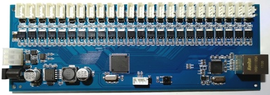
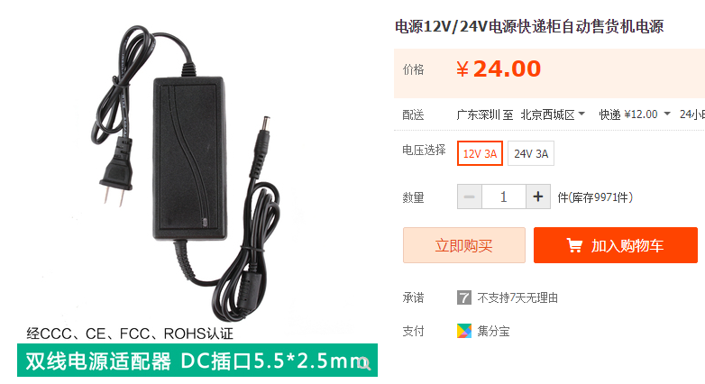
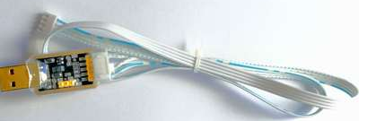
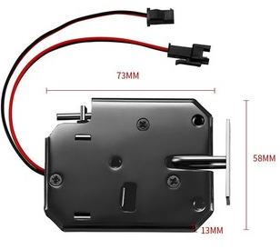
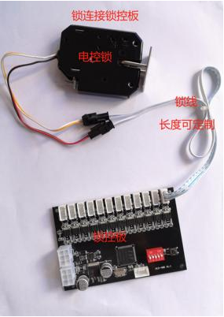
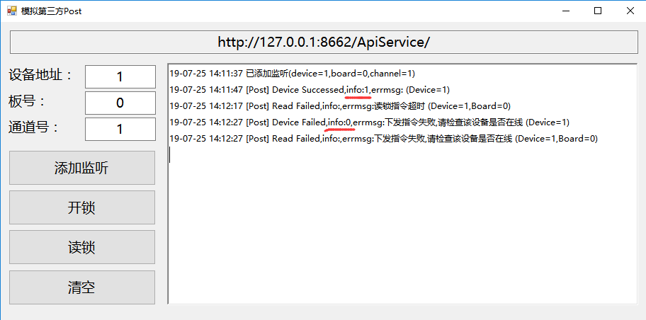
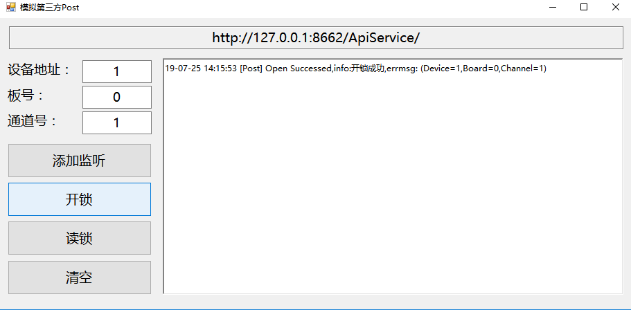
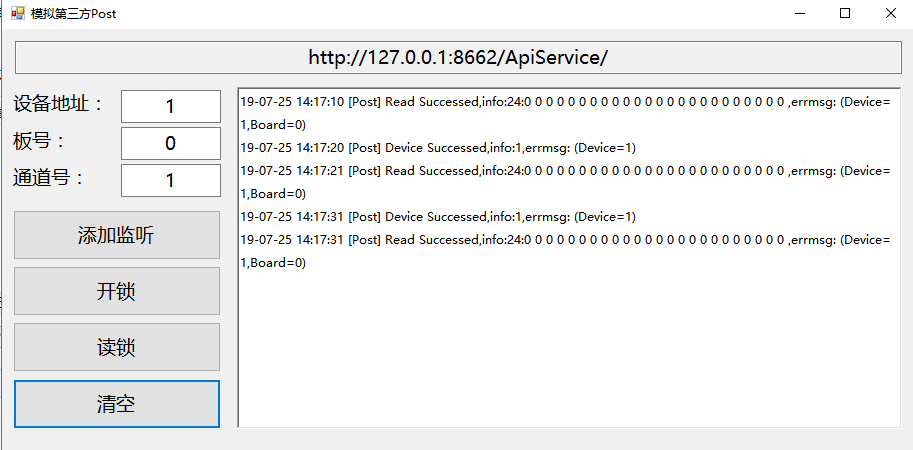
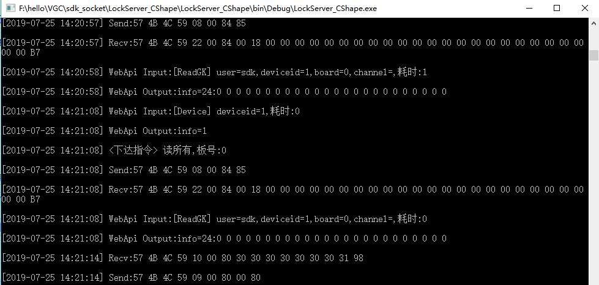
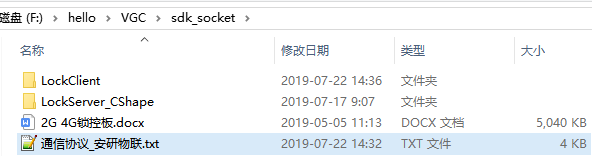

赞赏支持 QQ：505645074
设计目的
剥离硬件通信层和业务逻辑层，通过简单的调用webapi接口实现快速接入硬件目的
硬件清单（淘宝）
24路网口锁控板以太网控制板快递柜主板寄存柜主板网络扫码支付


锁控板升级线 USB转TTL串口线 程序下载线 锁控板参数配置线


电控锁延长线快递柜售货机延长线电磁锁延长线加工线束XH端子线束

硬件测试
设备是否在线：通过定时轮询WebApi Device接口获取状态

开锁

锁状态变化：通过定时轮询WebApi Read接口获取状态


代码结构
